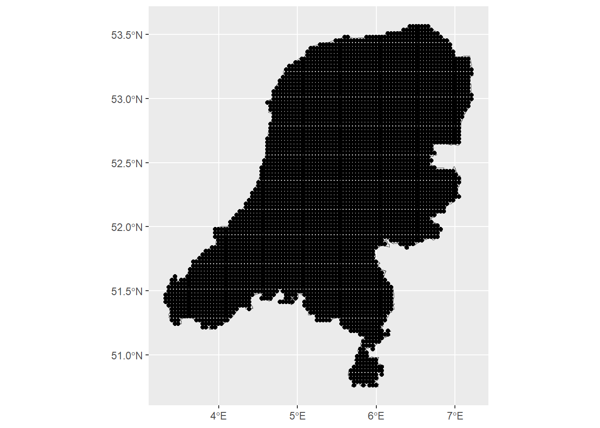
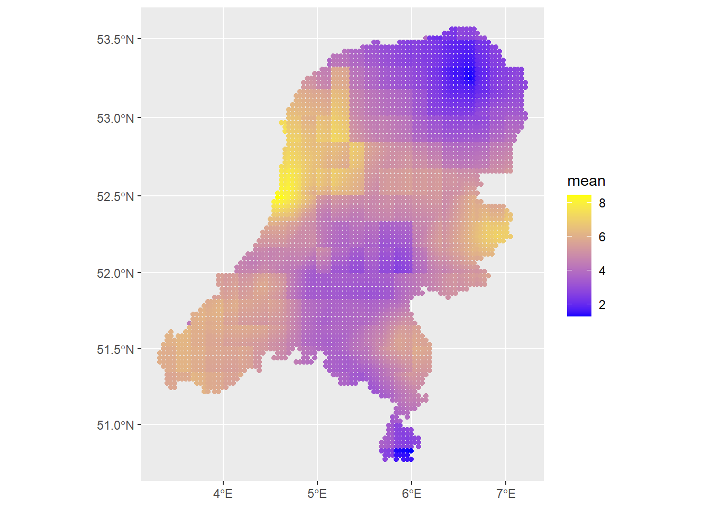
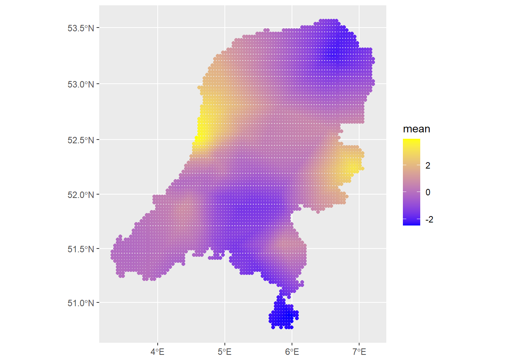

Having covered the need-to-know material for INLA and SPDE, next I’m going to build a spatial model using both INLA and inlabru. Comparing the two packages is useful because, though they can be expected to give the same results in most cases, the implementation is a bit different. Knowing when using the more complicated INLA can be justified is a useful exercise, I think.
The model fit here is a simple geostatistical one: \[
Y_i \sim N(u_i, \sigma^2)\\
u_i = \beta_0\cdot\text{temp} + \beta_1\cdot\text{precipitation}_i + S(x_i).
\] So it’s a typical Gaussian distributed variable with underlying latent structure. I’m not sure what the most accurate statistical way to say this is; potentially a spatial random effect “modelled as a Gaussian process”. This is what Paula Moraga calls “geostatistical data”, that is, measurements taken at discrete locations but used to describe or estimate a spatially continuous process, such as air pollution. It is very similar to a mixed model with a random effect. In this case the random effect is Gaussian distributed and spatially indexed.
It’s a simple model, so let’s get straight to data downloading and processing. I download air pollution data in the Netherlands for the year of 2023 from https://eeadmz1-downloads-webapp.azurewebsites.net/.
library(INLA)
Loading required package: Matrix
Loading required package: sp
This is INLA_24.05.01-1 built 2024-05-01 18:49:50 UTC.
- See www.r-inla.org/contact-us for how to get help.
- List available models/likelihoods/etc with inla.list.models()
- Use inla.doc(<NAME>) to access documentation
library(inlabru)
Loading required package: fmesher
library(sf)
Linking to GEOS 3.11.2, GDAL 3.8.2, PROJ 9.3.1; sf_use_s2() is TRUE
Rows: 4685 Columns: 27
── Column specification ────────────────────────────────────────────────────────
Delimiter: ","
chr (19): Country, Air Quality Network, Air Quality Network Name, Air Qualit...
dbl (8): Year, Air Pollution Level, Data Coverage, Verification, Longitude,...
ℹ Use `spec()` to retrieve the full column specification for this data.
ℹ Specify the column types or set `show_col_types = FALSE` to quiet this message.
station_locations <-rename(station_locations, Samplingpoint ='Sampling Point Id')station_locations %>%distinct(Samplingpoint, Longitude, Latitude) -> unique_locationsmerged_df <- df %>%left_join(unique_locations %>%select(Samplingpoint, Longitude, Latitude), by ="Samplingpoint")merged_df
Multiple layers are present in data source D:\data\maps\netherlands_bestuurlijkegrenzen_2021\bestuurlijkegrenzen.gpkg, reading layer `gemeenten'.
Use `st_layers' to list all layer names and their type in a data source.
Set the `layer' argument in `st_read' to read a particular layer.
Warning in CPL_read_ogr(dsn, layer, query, as.character(options), quiet, :
automatically selected the first layer in a data source containing more than
one.
Reading layer `gemeenten' from data source
`D:\data\maps\netherlands_bestuurlijkegrenzen_2021\bestuurlijkegrenzen.gpkg'
using driver `GPKG'
Simple feature collection with 352 features and 2 fields
Geometry type: MULTIPOLYGON
Dimension: XY
Bounding box: xmin: 10425.16 ymin: 306846.2 xmax: 278026.1 ymax: 621876.3
Projected CRS: Amersfoort / RD New
# coordinates of all cellsxy <- terra::xyFromCell(grid, 1:ncell(grid))# transform points to a sf objectdp <-st_as_sf(as.data.frame(xy), coords =c("x", "y"),crs =st_crs(map))# indices points within the mapindicespointswithin <-which(st_intersects(dp, map,sparse =FALSE))length(indicespointswithin)
[1] 4944
# points within the mapdp <-st_filter(dp, map)# plotggplot() +geom_sf(data = map) +geom_sf(data = dp)

More data process
library(geodata)# With geodata librarysave_path <-file.path("D:", "data", "air_quality_data", "aux_variables")covtemp <-worldclim_global(var ="tavg", res =10,path = save_path)covprec <-worldclim_global(var ="prec", res =10,path = save_path)# Extract at observed locationsair_sf$covtemp <-extract(mean(covtemp), st_coordinates(air_sf))[, 1]air_sf$covprec <-extract(mean(covprec), st_coordinates(air_sf))[, 1]# Extract at prediction locationsdp$covtemp <-extract(mean(covtemp), st_coordinates(dp))[, 1]dp$covprec <-extract(mean(covprec), st_coordinates(dp))[, 1]ggplot() +geom_sf(data = map) +geom_sf(data = air_sf, aes(col = Value)) +scale_color_viridis()
Min. 1st Qu. Median Mean 3rd Qu. Max.
0.5852 70.0344 109.2560 131.9875 179.8815 472.4047
Mesh options are from https://punama.github.io/BDI_INLA/#:~:text=stack%20function.,list%20of%20effects%20(effects).max.edge controls the largest triangle edge length, and providing it with a vector c(inner, outer) sets the max edge for inside the boundary and outside the boundary. The purpose of this is to avoid boundary effects in the estimation of the model, where boundary values have high variance. Lindgren and Rue (2015) suggest to extend the domain by some amount. This is briefly discussed in the book by Blangiardo (2015).
cutoff is the minimum allowed distance between points. Otherwise, points are replaced by a single vertex. For areas of high clusters of points, this could be useful to reduce redundancy. If no boundary is set the mesh is created on the convex hull of the observations.
# Using mesh0mesh <-inla.mesh.2d(loc = coo, max.edge=c(200, 500), crs=st_crs(air_sf_project))mesh$n
[1] 280
:::
Next we construct the A matrix that “A that projects the GRF from the observations to the vertices of the triangulated mesh.” (Moraga 2024). This A matrix has a row for each ovservation, and columns equal to the number of vertices in the mesh. That is shown above, with mesh$n. Below, two different meshes are generated. One for the observation locations, and one for the prediction locations. We need to set these both at once, because to make predictions in INLA we have to have that all pre-specified, unlike with the typical modelling style in R.
Additionally, the index allows us to extract fitted values from the model.
The smoothness parameter is set to 1, where in the spatial case \(d=2\) and \(\alpha=\nu + d/2 = 2\), seen in the code below.
# Make the projection matricesA <-inla.spde.make.A(mesh = mesh, loc = coo)Ap <-inla.spde.make.A(mesh = mesh, loc = coop)dim(A)
[1] 52 280
dim(Ap)
[1] 4944 280
Then we have to make the INLA stack. This is done because we need to combine the data for estimation with the prediction data, as well as the projection matrices. It contains the response data, the list of covariate data–here the temperature and precipitation–the projection matrices, and the indices.
# stack for estimation stk.estk.e <-inla.stack(tag ="est",data =list(y = air_sf_project$Value), A =list(1, A),effects =list(data.frame(b0 =rep(1, nrow(A)),covtemp = air_sf_project$covtemp, covprec = air_sf_project$covprec),s = indexs))#stk.e# stack for prediction stk.pstk.p <-inla.stack(tag ="pred",data =list(y =NA), A =list(1, Ap),effects =list(data.frame(b0 =rep(1, nrow(Ap)),covtemp = dp$covtemp, covprec = dp$covprec),s = indexs))#stk.p# stk.full has stk.e and stk.pstk.full <-inla.stack(stk.e, stk.p)
Finally, we can specify the model in INLA. All the hard work has been done above and at least the model specification in INLA is easier. This model has mean specified by \[
\mu_i = \beta_0 + \beta_1 \times \text{temp}_i + \beta_2 \times \text{prec}_i + S(x_i),
\] so there is some contribution from fixed effects as well as a unknown latent process modelled as a zero-mean Gaussian Random Field with Matern covariance function. This puts us well within INLA territory. The model equation can be seen quite clearly in the formula variable below.
formula <- y ~0+ b0 + covtemp + covprec +f(s, model = spde)res <-inla(formula, family ="gaussian",data =inla.stack.data(stk.full),control.predictor =list(compute =TRUE,A =inla.stack.A(stk.full)),control.compute =list(return.marginals.predictor =TRUE))
Notice that I am passing a few options to the inla call. Importantly, control.compute. We have a nice description of the control options at https://becarioprecario.bitbucket.io/inla-gitbook/ch-INLA.html#sec:controlops. It controls what quantities are actually computed and returned during the INLA estimation. For example, there are a few different information criteria that it can return.
control.predictor will compute the posterior marginals of the parameters.
::: Once the model is fit, we can inspect the fixed parameters and estimated latent field, as well as the hyperparameters for the latent field. ::: {.cell}
# Latent field is here# res$summary.random$s# res$summary.hyperparindex <-inla.stack.index(stack = stk.full, tag ="pred")$datapred_mean <- res$summary.fitted.values[index, "mean"]pred_ll <- res$summary.fitted.values[index, "0.025quant"]pred_ul <- res$summary.fitted.values[index, "0.975quant"]grid$mean <-NAgrid$ll <-NAgrid$ul <-NAlength(pred_mean)
[1] 4944
length(indicespointswithin)
[1] 4944
grid$mean[indicespointswithin] <- pred_meangrid$ll[indicespointswithin] <- pred_llgrid$ul[indicespointswithin] <- pred_ulsummary(grid) # negative values for the lower limit
mean ll ul
Min. :1.338 Min. :-4.722 Min. : 3.733
1st Qu.:3.626 1st Qu.: 0.359 1st Qu.: 6.530
Median :4.665 Median : 1.462 Median : 7.813
Mean :4.595 Mean : 1.368 Mean : 7.874
3rd Qu.:5.553 3rd Qu.: 2.405 3rd Qu.: 9.087
Max. :8.316 Max. : 6.753 Max. :12.860
NA's :5056 NA's :5056 NA's :5056
We can change both the Gaussian approximation strategy for the posterior full conditional distributions, as well as the integration strategy used to integrate out the \(\theta_{-k}\) parameters to get the marginal distribution for \(\theta_k\).
The "grid" option is the most costly, compared to the central composite design ("ccd"). In the empirical bayes option ("eb"), the posterior mode is used as the integration point.
approx_strategy <-c("gaussian", "simplified.laplace", "laplace")int_strategy <-c("ccd", "grid", "eb")models <-c("iid", "matern")fits <-matrix(nrow=length(approx_strategy)*length(int_strategy)*length(models), ncol=3)fits_marginals <-vector(mode="list", length=length(approx_strategy)*length(int_strategy)*length(models))index_f <-0model_names <-c()for (m in models){for(a in approx_strategy){for (i in int_strategy){ index_f <- index_f +1if (m=="matern"){ formula_approx <- y ~0+ b0 + covtemp + covprec +f(s, model = spde) }else{ formula_approx <- y ~0+ b0 + covtemp + covprec +f(s, model ="iid") }print(paste(a, ", ", i, ", ", m)) model_names <-c(model_names, paste(a, ", ", i, ", ", m)) fit_approx <-inla(formula, family ="gaussian",data =inla.stack.data(stk.full),control.inla =list(strategy = a, int.strategy = i),control.compute =list(cpo =TRUE, dic =TRUE, waic =TRUE),control.predictor =list(compute =TRUE, A =inla.stack.A(stk.full))) fits[index_f,] <- fit_approx$summary.fixed$mean fits_marginals[[index_f]] <- fit_approx$marginals.fixed$b0 } }}
Next, let’s write that model in INLABRU and check if the estimates are the same. Then, we also look at how to fit the LGCP in INLA/INLABRU.
Wne can use the same mesh and spde function as we used before. And also the same formula! (I think). But what is especially nice about INLABRU is that we don’t have to set up the stack with the projection matrices. We just model the response variable as a function of the covariates in the dataset we set up earlier and the locations of the observations. In INLABRU, we can use the sf dataset object directly.
INLA ::: {.cell}
formula <- Value ~Intercept(1) + covtemp + covprec +f(geometry, model = spde)# Fit the model for inlabrufit <-bru(formula, data = air_sf_project, family ="gaussian")# Summarize the resultssummary(fit)
inlabru version: 2.12.0
INLA version: 24.05.01-1
Components:
Intercept: main = linear(1), group = exchangeable(1L), replicate = iid(1L), NULL
covtemp: main = linear(covtemp), group = exchangeable(1L), replicate = iid(1L), NULL
covprec: main = linear(covprec), group = exchangeable(1L), replicate = iid(1L), NULL
f: main = spde(geometry), group = exchangeable(1L), replicate = iid(1L), NULL
Likelihoods:
Family: 'gaussian'
Tag: ''
Data class: 'sf', 'grouped_df', 'tbl_df', 'tbl', 'data.frame'
Response class: 'numeric'
Predictor: Value ~ .
Used components: effects[Intercept, covtemp, covprec, f], latent[]
Time used:
Pre = 1.72, Running = 0.754, Post = 0.346, Total = 2.82
Fixed effects:
mean sd 0.025quant 0.5quant 0.975quant mode kld
Intercept -15.298 21.347 -57.760 -15.172 26.458 -15.171 0
covtemp 2.170 2.095 -1.800 2.095 6.539 2.094 0
covprec -0.016 0.203 -0.421 -0.014 0.382 -0.014 0
Random effects:
Name Model
f SPDE2 model
Model hyperparameters:
mean sd 0.025quant 0.5quant
Precision for the Gaussian observations 0.308 0.080 0.177 0.299
Theta1 for f 1.928 0.531 0.908 1.920
Theta2 for f -4.134 0.692 -5.533 -4.122
0.975quant mode
Precision for the Gaussian observations 0.489 0.283
Theta1 for f 2.999 1.883
Theta2 for f -2.808 -4.070
Deviance Information Criterion (DIC) ...............: 231.65
Deviance Information Criterion (DIC, saturated) ....: 71.69
Effective number of parameters .....................: 16.69
Watanabe-Akaike information criterion (WAIC) ...: 232.14
Effective number of parameters .................: 14.00
Marginal log-Likelihood: -145.00
is computed
Posterior summaries for the linear predictor and the fitted values are computed
(Posterior marginals needs also 'control.compute=list(return.marginals.predictor=TRUE)')
::: That gives nearly the same estimates as from INLA. ::: {.cell}
map_prj <-st_transform(map, crs = projMercator)predictions1 <-predict(fit, newdata=dp, formula =~ Intercept + covtemp + covprec + f)predictions2 <-predict(fit, newdata=dp, formula =~ f)ggplot() +geom_sf(data=predictions1, aes(color=mean)) +scale_colour_gradient(low ="blue", high ="yellow")

# Check the contribution of just the spatial fieldggplot() +geom_sf(data=predictions2, aes(color=mean)) +scale_colour_gradient(low ="blue", high ="yellow")

::: That concludes this section, showing how to fit spatial model in INLA and inlabru. There are a few things more to do: simulating data and seeing how well INLA recovers the parameters, and fitting a temporal model in both packages. But I’ll leave these for later.